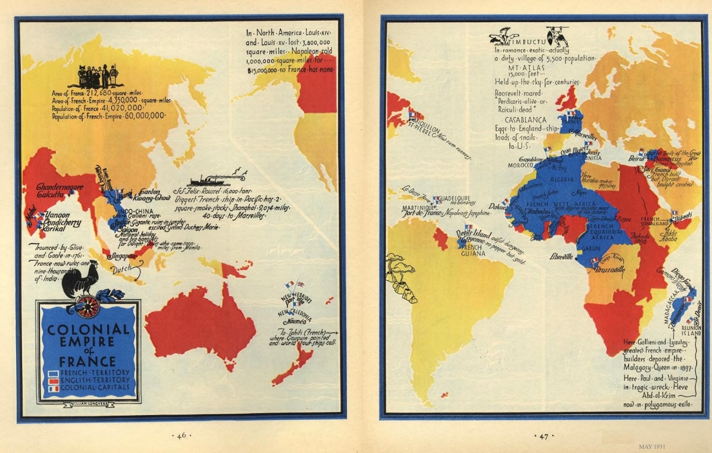

🇬🇧 English
French History
Home
Colonisation
Topics
French Colonisation & Decolonisation
Overview

Motives for Colonisation
Colonial Rule and Impact
Decolonisation
Legacy and Memory
← Previous: Napoleon & Waterloo
Next: France during WW1 →